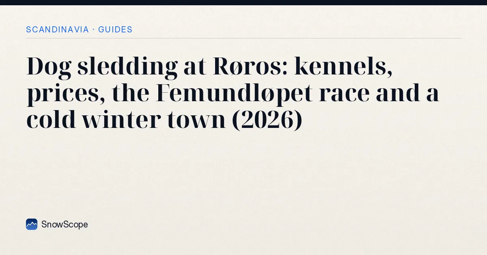

Dog sledding at Røros: kennels, prices, the Femundløpet race and a cold winter town (2026)
Røros, the old copper town on the mountain plateau near the Swedish border, is one of the coldest towns in Norway in winter and a centre for sled dogs. Right now the snow is thin but real: the weather station in Røros, at 630 m, measured 11 cm on the morning of 13 November. Norway's national snow map, an estimate, puts a little less on the plateau around it, about 5 to 6 cm between 625 and 809 m. There is enough to look like winter, not yet enough for long trips.
See the live snow forecast for Scandinavia in the SnowScope appSnow depth, powder alerts and the 3D map, free.

Kennels around Røros
Destination Røros lists several dog-sledding businesses. Kennel Dølanvollen, about ten minutes north of town, publishes clear prices: a recommended trip of about 2 hours costs 2500 NOK per person, a shorter one 1500 NOK, and children pay 1000 NOK. On bare ground it uses a wagon instead of a sled. It does not run when it is colder than -20 °C, which can happen here.
Fjestad Husky in Tufsingdalen lives with 40 Alaskan huskies; its owner is one of the founders of the Femundløpet race. Further south, Eywas Trails near Tynset offers a half-day trip of about 2.5 hours.
Femundløpet, February 2027
Røros is where Femundløpet, the long-distance sled-dog race, starts and finishes. The race website gives the start of the longest class, F650, on 10 February 2027 in Kjerkgata, the main street of the World Heritage town. The F450 and junior classes start on 11 February, and the F200 on 12 February. Watching a start in the street is the easiest way to see a lot of dogs ready to run.
Your own dog on the plateau
Norway's leash period runs from 1 April to 20 August, but the law's purpose applies all year: a dog must not chase or harm livestock, tame reindeer or wild animals. Around Røros the reindeer are herded and often near roads and trails in winter, so keep your dog on a leash when you see them.
On groomed ski trails, keep to the side and keep the dog out of the track. Short-haired dogs need a coat on the plateau when the deep cold sets in.
Tips for skiers
- Ask the kennel what it does below -20 °C or on bare ground: wagon tours or a new date.
- For Femundløpet, come to Kjerkgata early for the start; the town fills up.
- Bring proper wool layers: the cold at Røros is dry and deep, and it bites harder than the number suggests.
References and credits
- seNorge, Norway's national snow map (NVE and MET Norway), open data under the NLOD licence www.senorge.no/
- SMHI, open data: daily snow depth at Swedish weather stations www.smhi.se/data/meteorologi/ladda-ner-meteorologiska-observationer
- Destination Røros, dog sledding (official tourism board) www.roros.no/se-og-gjore/hundekjoring/hundekjoring-roros
- Kennel Dølanvollen, prices www.dogsleddingroros.no/priser
- Kennel Dølanvollen, info www.dogsleddingroros.no/info
- Destination Røros, Fjestad Husky www.roros.no/se-og-gjore/fjestad-husky-p6845463
- Destination Røros, half-day dogsledding in Tylldalen (Eywas Trails) en.roros.no/see-and-do/half-day-dogsledding-adventure-in-tylldalen-p8142883
- Femundløpet, programme day by day femundlopet.no/v2/for-publikum/program-dag-for-dag/1106
- Visit Norway, Røros www.visitnorway.com/places-to-go/trondelag/roros/
- Lovdata, Hundeloven (dog act) lovdata.no/dokument/NL/lov/2003-07-04-74
- MET Norway, station observations (CC BY 4.0), daily reports as published by Ogimet www.ogimet.com/
About these numbers
Snow: morning readings of 13 November 2026 at the official weather stations of Sweden (SMHI), Finland (FMI) and Norway (MET Norway station reports, CC BY 4.0, as published by Ogimet); for the Norwegian slopes the national snow map seNorge (NVE and MET Norway, NLOD), an estimate. Operators: those listed by the official tourism board, with dates, durations and prices read on the operators' own pages on 13 November 2026; prices change, check before booking. Rules: national laws and municipal rules linked below.
Cite this report
For research, teaching or the press: the numbers and charts are free to reuse under CC BY 4.0 with this citation.
SnowScope (2026), Dog sledding at Røros: kennels, prices, the Femundløpet race and a cold winter town (2026), https://snowscope.app/blog/en/2026/11/roros-dog-sledding-femund-winter-guide-2026.html, accessed 2026-11-14
SnowScope (Atlas Labs). (2026, November 14). Dog sledding at Røros: kennels, prices, the Femundløpet race and a cold winter town (2026). SnowScope snow reports. https://snowscope.app/blog/en/2026/11/roros-dog-sledding-femund-winter-guide-2026.html
BibTeX
@misc{snowscope2026rorosdogsleddingfemundwi,
author = {{SnowScope (Atlas Labs)}},
title = {Dog sledding at Røros: kennels, prices, the Femundløpet race and a cold winter town (2026)},
year = {2026},
month = nov,
howpublished = {\url{https://snowscope.app/blog/en/2026/11/roros-dog-sledding-femund-winter-guide-2026.html}},
note = {Published 2026-11-15 09:34 UTC; accessed 2026-11-14}
}· CC BY 4.0 · Methods, data and tools →
Follow Scandinavia
Free: a message when fresh snow is coming, and the forecast every morning.
More snow reports

Bogus Basin snow check for Boise skiers on 13 November 2026: no snow on the ground yet, rain and mixed snow this weekend with a snow level near 6,300 to 6,800 ft, then colder air and about 8 in at the summit by next week.

Alpental snow forecast for 13 November 2026: about 1 in on the upper mountain, rain almost to the summit this weekend with a snow level near 5,400 to 5,600 ft, then 4 to 5 in of mixed rain and snow up top next week.

Vail in numbers: a usual peak of about 64 in (162 cm) at mid-mountain over 46 past winters, March the deepest month, plus terrain, access and safety.